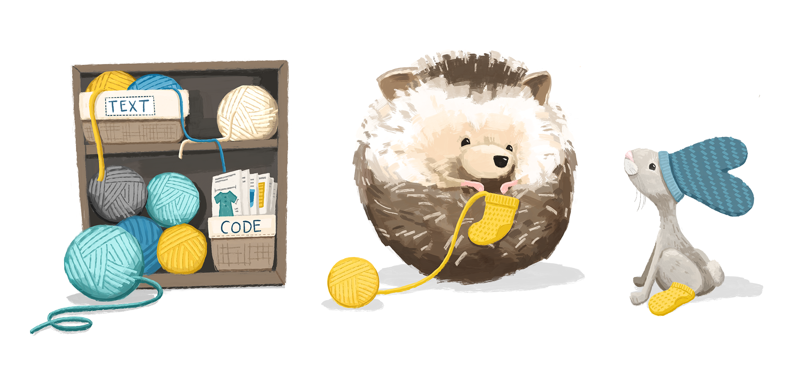
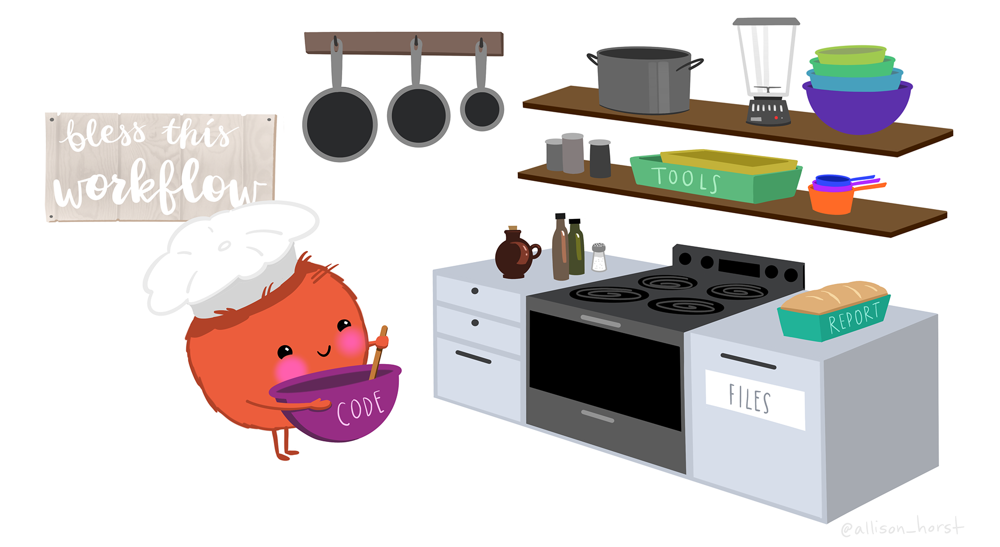

2 Bash One-liners para Bioinformática
Los one-liners son comandos cortos que permiten resolver tareas específicas desde la terminal. En bioinformática son especialmente útiles para explorar archivos, filtrar información, transformar datos y automatizar procesos sin necesidad de escribir programas completos.
En bioinformática son especialmente útiles porque muchos archivos de resultados tienen una estructura regular: columnas, campos separados por tabuladores, registros repetitivos o bloques de varias líneas.
En este capítulo conocerás algunas de las herramientas más utilizadas para trabajar con archivos de texto y secuencias biológicas. Aunque los ejemplos son sencillos, los mismos comandos pueden aplicarse a archivos de gran tamaño utilizados en análisis reales.
¿Por qué aprender one-liners?
Muchos resultados bioinformáticos son archivos de texto. Antes de abrirlos en un programa gráfico, puedes inspeccionarlos, filtrarlos, contar registros, seleccionar columnas o construir resúmenes directamente desde la terminal. Esto resulta especialmente útil cuando los archivos son demasiado grandes para trabajar cómodamente con un editor.
2.1 awk y sed — Fundamentos
awk y sed son dos herramientas fundamentales para manipular archivos de texto desde la línea de comandos. Aunque suelen utilizarse juntas, cada una tiene un propósito diferente:
awkestá diseñado para trabajar con datos organizados en columnas. Es ideal para filtrar información, realizar cálculos y generar reportes a partir de archivos tabulados.sedpermite buscar, reemplazar y modificar texto línea por línea mediante expresiones regulares.
Ambas herramientas son ampliamente utilizadas en bioinformática para procesar archivos como FASTA, FASTQ, GFF, BED y otros formatos de texto.
2.1.1 awk
La estructura básica de un comando con awk es:
awk '{ acciones }' archivodonde:
awkinvoca la herramienta.{ acciones }indica las instrucciones que se ejecutarán para cada línea del archivo.archivoes el archivo de entrada que se desea procesar.
awk
Cuando encuentres un awk nuevo, intenta separarlo en estas piezas:
awk -F "\t" '$3 == "gene" {print $1, $4, $5}' annotation.gff3-F "\t"define cómo separar los campos.$3 == "gene"es la condición.{print $1, $4, $5}es la acción.annotation.gff3es la entrada.
Si puedes identificar esas cuatro partes, normalmente puedes modificar el comando sin necesidad de memorizarlo.
2.1.2 Ejemplos básicos con awk
Los siguientes ejemplos muestran algunas de las tareas más frecuentes que pueden realizarse con awk. Intenta ejecutarlos y modificar los ejemplos para comprender cómo funciona cada uno.
# Extraer columnas 2, 4 y 5 de un archivo
awk '{print $2, $4, $5}' input.txt
# Filtrar líneas donde la columna 5 sea igual a un valor
awk '$5 == "abc123"' file.txt
# Filtrar líneas donde la columna 5 NO sea igual a un valor
awk '$5 != "abc123"' file.txt
# Filtrar por expresión regular en columna 7
awk '$7 ~ /^[a-f]/' file.txt
# Eliminar duplicados conservando el orden original
awk '!visited[$0]++' file.txt
# Filas donde columna 3 > columna 5
awk '$3 > $5' file.txt
# Sumar columna 1
awk '{sum += $1} END {print sum}' file.txt
# Calcular la media de la columna 2
awk '{x += $2} END {print x/NR}' file.txt
# Entradas únicas basadas en columna 2
awk '!arr[$2]++' file.txt2.1.3 sed
sed también procesa el archivo línea por línea, pero está pensado principalmente para seleccionar, eliminar o sustituir texto. Su operación más conocida es s/viejo/nuevo/, pero también puede eliminar líneas con d, imprimir rangos con -n y trabajar con expresiones regulares.
Una diferencia práctica es que awk suele ser nuestra primera opción cuando pensamos en columnas y condiciones,mientras que sed resulta natural cuando pensamos en patrones y transformaciones de líneas.
2.1.4 Operaciones esenciales con sed
# Reemplazar todas las ocurrencias de "foo" por "bar"
sed 's/foo/bar/g' file.txt
# Eliminar espacios/tabulaciones al inicio de cada línea
sed 's/^[ \t]*//' file.txt
# Eliminar espacios/tabulaciones al final de cada línea
sed 's/[ \t]*$//' file.txt
# Eliminar líneas en blanco
sed '/^$/d' file.txt
# Imprimir línea específica (ej. línea 42)
sed -n '42p' file.txt
# Eliminar todo a partir de una línea marcada
sed -n '/EndOfUsefulData/,$!p' file.txtHasta ahora hemos visto dos herramientas fundamentales para trabajar con texto desde la terminal:
awk, para trabajar con columnas, condiciones y operaciones sobre los datos.sed, para buscar, reemplazar, eliminar y transformar líneas.
Los ejemplos anteriores muestran algunas de las operaciones más comunes. Ahora es momento de ponerlas en práctica y comprobar qué tanto has comprendido. No te preocupes si necesitas volver a los ejemplos anteriores; consultar la documentación y revisar tus notas también forma parte del aprendizaje.
¿Qué hace el siguiente comando?
awk '!arr[$2]++' file.txt- Imprime todas las líneas donde la columna 2 sea única
- Cuenta cuántas veces aparece cada valor de la columna 2
- Elimina duplicados de la columna 2, conservando la primera ocurrencia
- Ordena el archivo por la columna 2
La respuesta correcta es c).
arr[$2] crea un array asociativo con la columna 2 como clave. El operador ! niega el valor, y ++ lo incrementa. La primera vez que aparece un valor, arr[$2] es 0 (falso), !0 = verdadero → se imprime. La segunda vez, arr[$2] es 1 (verdadero), !1 = falso → se omite.
# Ejemplo práctico: eliminar genes duplicados de una lista
awk '!arr[$2]++' genes.tsvCompleta el comando para calcular el promedio de la columna 3 de datos.txt:
awk '{___ += $___} END {print ___ / NR}' datos.txtawk '{suma += $3} END {print suma / NR}' datos.txtsuma += $3acumula los valores de la columna 3
NRes una variable especial deawkcon el número total de registros (líneas)
- El bloque
END{}se ejecuta al terminar de leer el archivo
2.2 sort, uniq, cut y más
2.2.1 Una caja de herramientas, no una colección de comandos

No todas las tareas requieren awk. Una buena práctica en Bash es utilizar la herramienta más sencilla que resuelva correctamente el problema. cut, sort, uniq y wc son comandos pequeños, pero al combinarlos pueden producir análisis muy útiles.
Por ejemplo, si queremos conocer cuántas veces aparece cada organismo en una tabla, podemos pensar en pasos independientes:
seleccionar la columna → ordenar → contar → ordenar por frecuenciay convertir esa idea en:
cut -f2 archivo.tsv | sort | uniq -c | sort -nrLa capacidad importante aquí no es memorizar esta línea, sino aprender a traducir una pregunta en una secuencia de transformaciones.
awk y sed son muy flexibles, pero no siempre necesitamos una herramienta tan potente. Una de las habilidades más útiles en Bash es saber cuándo una tarea puede resolverse con un comando pequeño y fácil de leer. cut selecciona campos, sort ordena, uniq agrupa valores consecutivos y wc cuenta.
Estos comandos adquieren mucha potencia cuando se combinan. Un patrón clásico es:
cut -f2 archivo.tsv | sort | uniq -c | sort -nrAquí cada etapa hace una sola cosa: extraer una columna, ordenar los valores para que los duplicados queden juntos, contarlos y finalmente ordenar los conteos. Este tipo de composición es una de las ideas centrales de la línea de comandos.
Estas herramientas son pequeñas, pero juntas permiten construir pipelines muy potentes. Una combinación especialmente frecuente es:
seleccionar → ordenar → contar → volver a ordenar → seleccionar los primeros resultados
Por ejemplo, uniq -c cuenta ocurrencias de líneas consecutivas, por lo que normalmente debe ir precedido por sort.
2.2.2 Comandos de filtrado y conteo
# Numerar cada línea de un archivo
cat -n file.txt
# Contar líneas únicas
sort -u file.txt | wc -l
# Encontrar líneas compartidas entre dos archivos
comm -12 <(sort -u file1) <(sort -u file2)
# Ordenar numéricamente por la columna 9
sort -gk9 file.txt
# Las cadenas más frecuentes en la columna 2
cut -f2 file.txt | sort | uniq -c | sort -k1nr | head
# 10 líneas aleatorias
shuf file.txt | head -n 10
# Todas las combinaciones de 3-mers de DNA
echo {A,C,T,G}{A,C,T,G}{A,C,T,G}
# Separar archivo FASTQ interleaved en /1 y /2
cat interleaved.fq | paste - - - - - - - - \
| tee >(cut -f 1-4 | tr "\t" "\n" > reads_1.fq) \
| cut -f 5-8 | tr "\t" "\n" > reads_2.fq
# Excluir una columna (ej: todo menos la columna 5)
cut -f5 --complement archivo.tsv
# Buscar texto en múltiples archivos (recursivo, ignorando mayúsculas)
grep -lir "texto buscado" *Completa el pipeline para encontrar las 5 secuencias más frecuentes en la columna 3 de reads_summary.tsv:
cut -f___ reads_summary.tsv | sort | uniq -___ | sort -k___nr | head -n ___cut -f3 reads_summary.tsv | sort | uniq -c | sort -k1nr | head -n 5Desglose: - cut -f3: extrae la columna 3 - sort: ordena para que uniq funcione correctamente - uniq -c: cuenta ocurrencias, prepende el conteo - sort -k1nr: ordena numéricamente en reversa por la columna 1 (conteo) - head -n 5: muestra los 5 más frecuentes
Tienes un archivo sample.fastq con millones de reads. Construye un pipeline que:
- Extraiga solo las secuencias (líneas 2 de cada read)
- Calcule la distribución de longitudes
- Muestre las 10 longitudes más frecuentes
- Guarde el resultado en
longitud_dist.txt
Pista: Combina sed, awk, sort y uniq.
# Solución completa en un pipeline
sed -n '2~4p' sample.fastq \
| awk '{print length($0)}' \
| sort -n \
| uniq -c \
| sort -k1nr \
| head -n 10 \
| awk '{print $2"\t"$1}' \
> longitud_dist.txt
# Ver resultado
echo "Longitud(bp) Frecuencia"
cat longitud_dist.txt
# Alternativa con awk directo (más eficiente para archivos grandes):
awk 'NR%4==2 {len[length($0)]++}
END {for (l in len) print l"\t"len[l]}' sample.fastq \
| sort -k1n > longitud_dist.txt